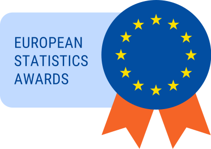
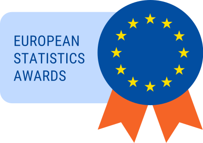

The challenge
 

In the area of nowcasting, the European Statistics Awards Programme aims to discover promising methodologies and potential external data sources that could, now or in the future, be used to improve the timeliness of key EU economic indicators. Better timeliness is a recurring demand for official statistics so there are obvious benefits to developing new approaches which obtain more accurate estimates within a shorter interval. Even where a satisfactorily accurate point estimate is already available, alternative methodologies carry significant potential secondary benefits like reduced cost, improved robustness and applicability in cases where a developed statistical system is still not established.
The 2022 round of the Nowcasting awards is divided into 3 separate competitions, each focusing on the nowcasting of one economic indicator:
- PPI: Producer prices in industry (domestic market)
- PVI: Production volume in industry
- TOURISM: Number of nights spent at tourist accommodation establishments
Our team
We represent INSEE, the French National Institute of Statistics and Economic Studies, for this challenge. Our team is composed of 5 members:
- Thomas Faria, Data Scientist in the Innovation Lab in Data Science
- Pierre Leblanc, Head of Division in the Short-term Statistics Department
- Inès Moutachaker, Research Analyst in the Department of Economic Studies
- Antoine Palazzolo, Data Scientist in the Innovation Lab in Data Science
- Alain Quartier-La-Tente, Research analyst in the Department of Economic Studies
Licence
This work is licensed under the European Union Public Licence 1.2.
See the code on Github.
Acknowledgements
On behalf of our team, we would like to express our gratitude to:
- INSEE and our hierarchy for providing us with the time and resources to participate in this challenge and supporting our research efforts.
- The IT innovation team at INSEE for providing us with the SSPCloud platform, which not only enabled us to perform our data science analysis with ease but also provided us with an efficient computing environment.
- The various teams at INSEE whom we reached out to for their invaluable advice and guidance throughout the competition.
- The organizers of this challenge for creating a stimulating and engaging platform to showcase our skills.
- The creators of the RJDemetra package, which provided us with powerful tools for seasonal adjustment of time series data, enhancing the accuracy of our models.
- Sebastian Krantz, the creator of the dfms package, for openly sharing this valuable resource and providing a user-friendly and efficient tool for estimating Dynamics Factor Models (DFM) in R, which significantly facilitated our nowcasting analysis.
Thank you all for your support and contributions to our success in this endeavor.